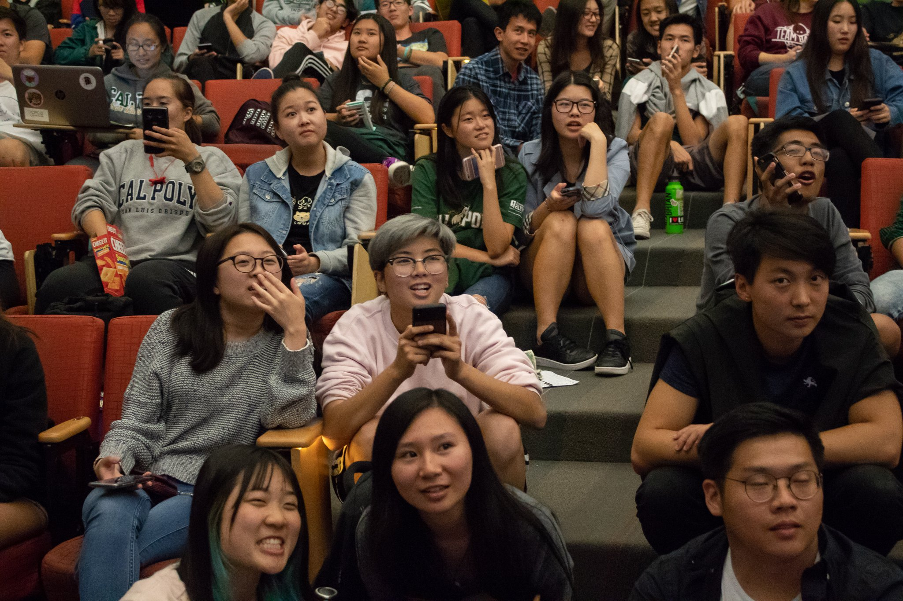
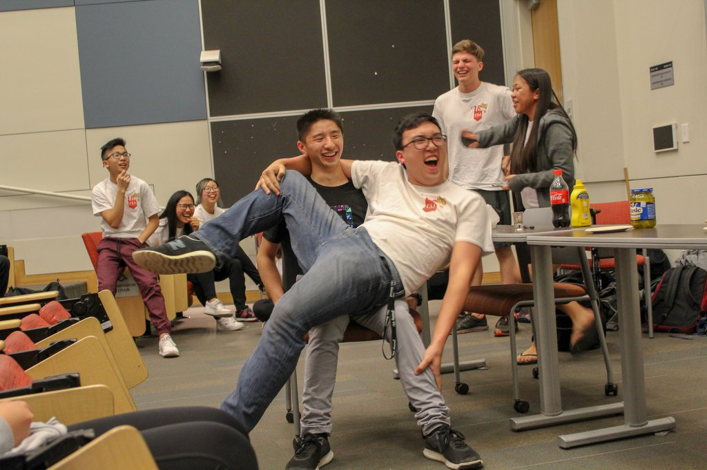
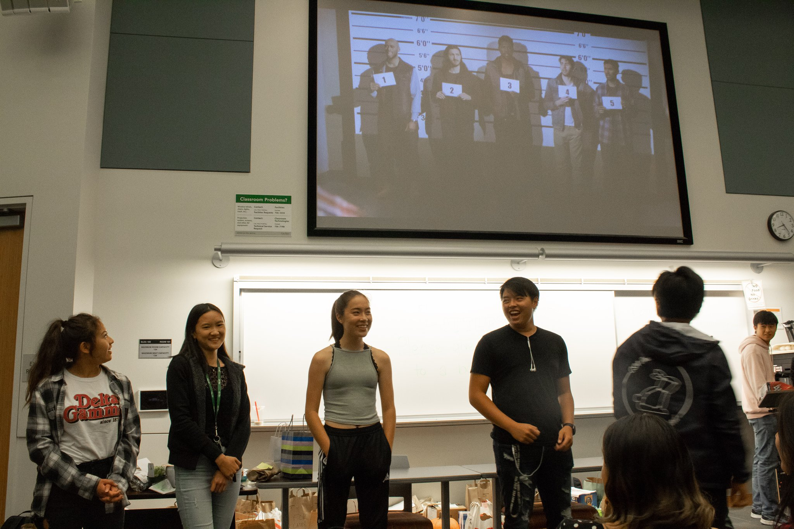
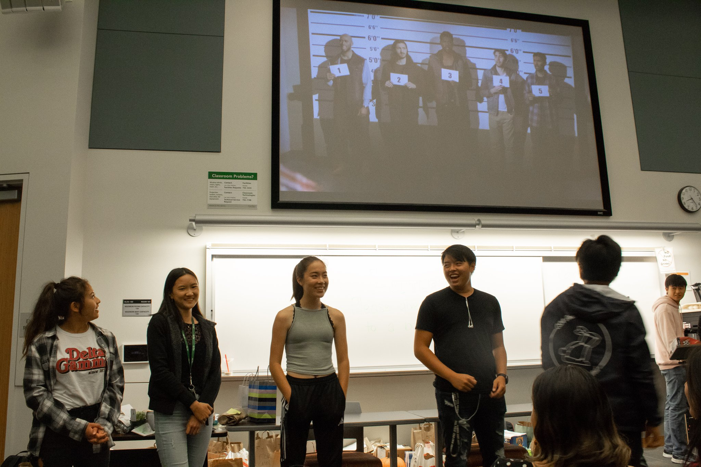
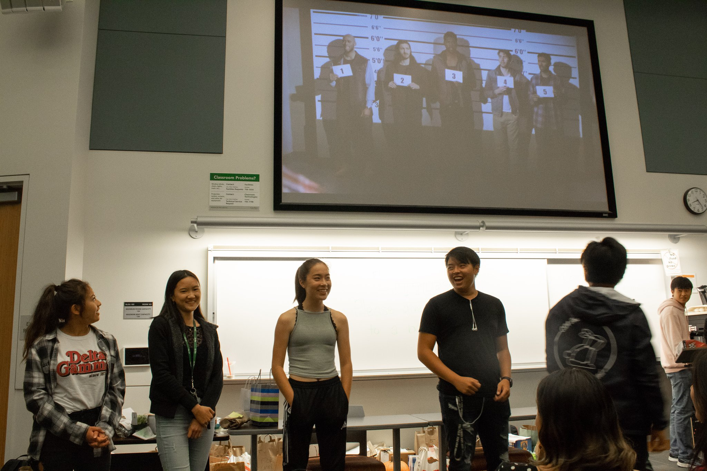
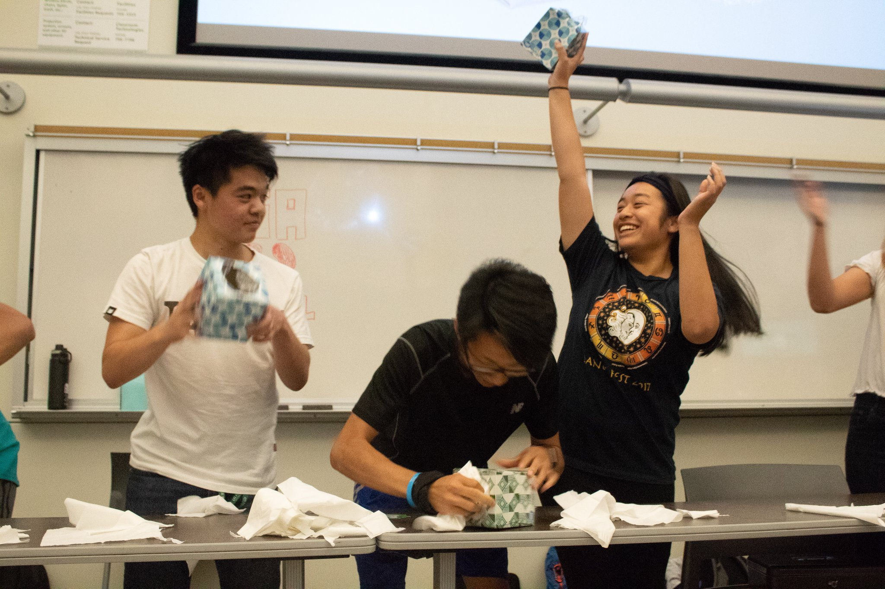
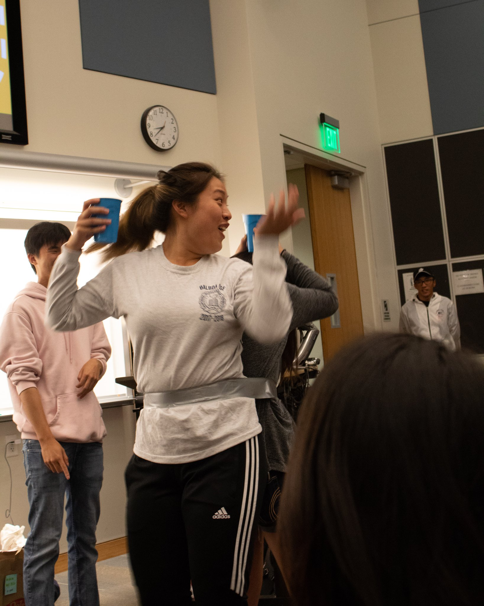
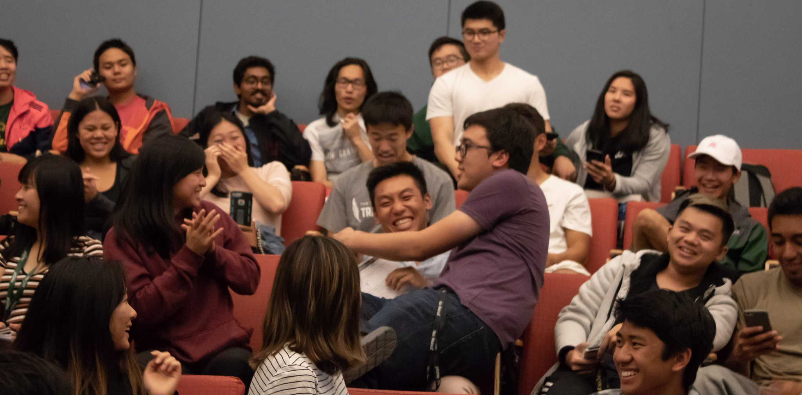
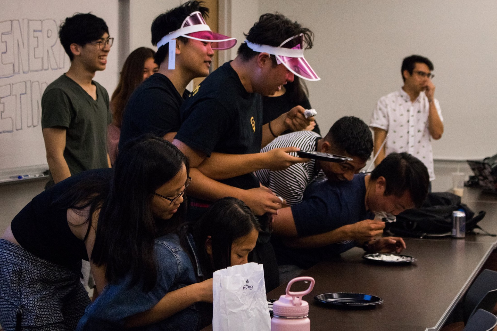

General Meetings
CSA has general meetings every Tuesday at 8 pm! Anybody is welcome to attend our meetings, so come out and have a good time!
At general meetings, we keep you up to date with CSA’s upcoming events, we play fun icebreaker games that anyone can participate in, and more! General meetings are also a great way to meet new people in the club and to get hyped for things that are in store for the club in the coming weeks!


 





